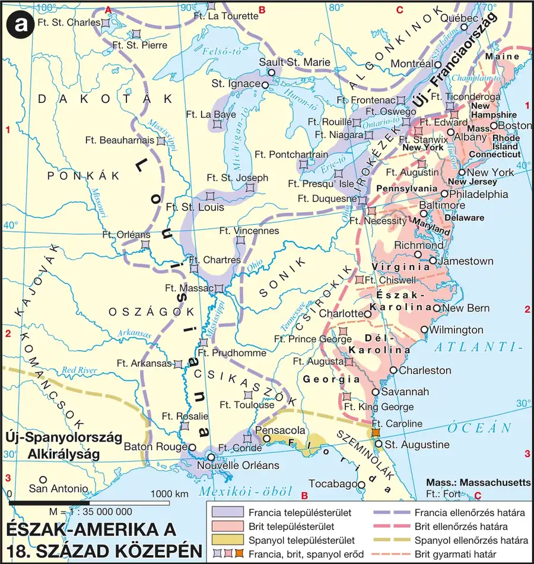

A gyarmatok gazdasági-társadalmi jellemzői
A 18. században az Atlanti-óceán partvidékén fekvő tizenhárom angol gyarmat dinamikusan fejlődött. Az északi (Új-Anglia) és középső területeken az iparból (vasipar, hajóépítés) és a kereskedelemből élő városokat szabad farmergazdaságok gabonatermelése látta el; délen az ültetvényeken Afrikából behurcolt fekete rabszolgákkal termeltek dohányt, rizst és gyapotot, amelyet Európában értékesítettek. A gyarmatok lakossága a bevándorlás és a magas gyermekszám miatt ugrásszerűen megnőtt (1720: 300 ezer fő; 1775: 2 millió fő). A fehér gyarmatosok teljes jogú brit állampolgárnak tekintették magukat, London azonban elutasította az egyenrangúságot, és gyarmati alattvalóként kezelte őket. A londoni parlament sokáig nem szólt bele a gyarmati önigazgatásba, csak a külügyet és a hadügyet felügyelte.
A hétéves háború és a „kellemetlenkedő törvények”
A hétéves háború (1756–1763) során a brit hadsereg legyőzte a franciákat és megszerezte Kanadát — a franciák kiszorítása Észak-Amerikából ugyanakkor jelentős államadósságot okozott Nagy-Britanniának. A londoni parlament a háborús kiadások egy részét az addig alig adózó gyarmatokkal akarta megfizettetni, ez azonban komoly ellenállásba ütközött: a gyarmati gyűlések azzal érveltek, hogy mivel nincs képviselőjük a londoni parlamentben, annak nincs joga adót kivetni rájuk — ez volt a „nincs adózás képviselet nélkül” elve. 1763-tól sorra következtek a gyarmatok által „kellemetlenkedő törvényeknek” nevezett intézkedések: letelepedési tilalom az Appalache-hegységtől nyugatra (1763), cukor-törvény (1764, behozatali vám), elszállásolási törvény (1765, brit katonák elszállásolása), és a bélyeg-törvény (1765, minden hivatalos irat okmánybélyeg-kötelezettsége — közvetlen adóként értelmezve). A felháborodott gyarmatok nyomására 1766-ban Anglia visszavonta a bélyeg-törvényt, 1767-ben azonban Townshend pénzügyminiszter újabb vámokat vetett ki (üveg, festék, ólom, tea, papír) — ezeket a gyarmatok bojkottal és tüntetésekkel érték el, hogy visszavonják, a teára kivetett vám kivételével.
Fontos megkülönböztetés: a gyarmatok tiltakozása kezdetben nem a függetlenség kivívására irányult, hanem a brit alkotmányos hagyományra hivatkozva a képviselet nélküli adóztatás jogtalanságát kifogásolta — a teljes elszakadás gondolata csak fokozatosan, a konfliktus eszkalálódásával erősödött meg.
| Fogalmak | Személyek | Kronológia | Topográfia |
|---|---|---|---|
| — | — | 1756–1763 hétéves háború E; 1765 bélyeg-törvény E | Amerikai Egyesült Államok |
Észak-Amerika a 18. század közepén
A tizenhárom gyarmat elhelyezkedése és a kontinens gyarmati megosztottsága vizsgálható.

1. forrás — A bostoni Gazette hasábjairól (1765. április 29., tartalmi kivonat)
A lap gúnyosan azt írja: egyetlen gyarmati lakos sem készíthet el akár egy gombot vagy egy patkószeget sem anélkül, hogy valamelyik brit vasműves vagy gombkötő ne panaszkodna, hogy becsületén csorba esett, és hogy a „gyalázatos amerikai republikánusok” becsapták és kirabolták őket.
a) Milyen gazdasági ellentétet fogalmaz meg a cikk?
b) Milyen hangnemben ír a gyarmati lakosokról a brit kézműves?
c) Milyen szó utal már ekkor a gyarmatok politikai önértelmezésére?
Ellenőrző feladatok
Állítás: A londoni parlament a hétéves háború előtt rendszeresen beavatkozott a gyarmatok belső ügyeibe.
Mit jelentett a „nincs adózás képviselet nélkül” elv?
Egészítsd ki: Az 1765-ös törvény, amely minden hivatalos iratra okmánybélyeg vásárlását írta elő, a ______-törvény.